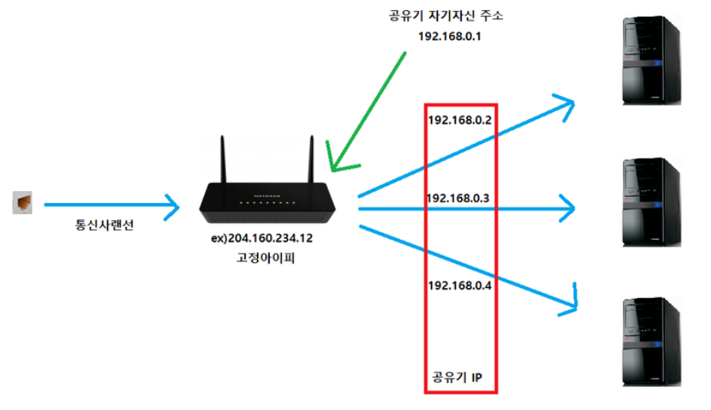

컴파일 설치와의 작별
소프트 스퀘어드 에서의 1주차 과제는 Linux 위에 APM을 컴파일 설치하여 서버를 구축하는 것이었다. 단순히 apt와 같은 패키지 매니저를 사용했으면 편했겠지만 컴파일 설치가 왜 중요한지, 어떨 때 사용하는지를 알 수 있었고 덕분에 CLI (Command-line interface) 환경에 조금 더 친숙해졌다.
어제 2주차 수업을 들으며 앞으로는 컴파일 설치를 하지 않아도 된다는 나름 희소식을 들었다.
스타벅스 가서 아메리카노 마실래
뚱딴지 같은 소리로 들릴 수도 있지만 2주차 Network 수업은 위의 문장으로 시작됐다. 결론부터 말하자면 아래의 설명을 쉽게 이해할 수 있도록 비유한 것이다. 개인적으로 설명을 들을 때 이렇게 비유와 예시가 동반되면 이해하기 훨씬 수월한 것 같다.
 서버에 대해 정리한 글에서 위의 사진을 봤을 것이다.
서버에 대해 정리한 글에서 위의 사진을 봤을 것이다. client를 고객, server를 스타벅스라고 가정해보자. 스타벅스 가서 아메리카노를 마시고 싶다면 무엇을 먼저 해야 하는가?
Protocol
고객은 먼저 주문 방법을 선택해야 한다. 앱을 통해 사이렌 오더를 할 것인지, 직접 가서 주문할 것인지 아니면 차를 타고 드라이브 스루를 할 것인지 등 여러 주문 방법이 있다. 이러한 주문 방법을 Protocol, 즉 통신 규약이라고 보면 된다.
http: Hyper Text Transfer Protocol, 주로 HTML 문서를 주고받는 데 사용https: http에 Secure socket이 더해진 프로토콜로 보안이 강화된 버전ftp: File Transfer Protocol, 파일을 전송하는 프로토콜로 지금은 보안이 좋지 않아 잘 사용 Xsftp: ssh(secure shell) 의 파일 전송 버전
Port (number)
주문 방법을 정했다면 이제 스타벅스에 들어갈 수 있다. 하지만 직접 주문하는 것와 드라이브 스루를 하는 경우 들어가는 문이 다르고 이와 같은 문을 Port에 비유할 수 있다. 주문 방법에 따라 내부로 들어갈 수 있는 문이 다르다. 이는 프로토콜마다 특정한 포트 번호를 갖고 있음을 의미한다.
http: 80https: 443ftp: 21sftp: 22mysql: 3306
참고로 포트 번호는 고정된 숫자가 아니기 때문에 임의로 부여할 수 있다. 그러나 위에서 명시한 포트 번호는 관례적으로 자주 사용함을 알고 있어야 한다.
인바운드 규칙
만약 모든 문이 열려있다면 도둑이 스타벅스에 들어가 물건을 훔칠 확률이 높아진다. 따라서 특정 포트를 제외하고는 외부에서 들어올 수 없도록 해야 한다.
아웃바운드 규칙
스타벅스 내에서 일하는 직원은 자유롭게 밖으로 나가야하며 이러한 포트는 열려 있어야 한다.
Daemon
이렇게 문을 열고 들어가면 고객을 맞이해주는 직원, Daemon이 있다. 데몬은 백그라운드 프로세스의 일종으로 요청이 발생했을 때 이에 적절히 대응한다. 1주차 과제를 수행하여 httpd나 mysqld 명령어를 본 적 있는데, 이 때 끝에 붙은 d 가 데몬을 뜻한다.
결론적으로 스타벅스 가서 아메리카노 마실래라는 문장은 클라이언트가 서버에게 파일을 요청하는 것이다.
포트포워딩 (Port forwarding)
서버를 구축했던 1주차 과제에서는 결국 내 노트북이 클라이언트이자 서버였다. Firefox 웹 브라우저가 클라이언트 역할을 하며 phpinfo.php 등과 같은 파일을 요청해 서버에서 응답하는 방식이다.
2주차 과제는 이러한 클라이언트와 서버를 분리하여 외부에서 서버로의 접속을 가능케하는 것이다. 이를 위해 port forwarding에 대해 알아야 한다.

위의 사진에서 192.168.0.3 서버에 접속하고 싶다면 어떻게 해야 할까?
통신사 랜선을 꽂은 공유기는 204.160.234.12 라는 고정 IP 주소를 부여받게 된다. 그리고 공유기에 연결된 다수의 서버도 IP를 할당받는다. 이렇게 공유기가 가진 IP를 외부 IP, 공유기에 연결된 네트워크 기기들이 갖는 IP를 내부 IP라고 한다.
다시 질문으로 돌아가 내가 들고 있는 핸드폰으로 특정한 서버에 접속하고 싶다고 가정하자. 인터넷 창을 열어 위에서 예로 든 192.168.0.3 을 입력하면 당연히 들어가지지 않을 것이다. 이와 동일한 내부 IP를 다른 공유기에서도 할당하고 있을 수 있기 때문이다.
포트 번호를 통한 접근
따라서 외부 IP를 통해 접근해야 하는데, 어떻게 세 개의 서버 중 특정한 곳으로 가게 할까?
이는 포트 번호를 이용하면 된다. 우리가 접근하고자 하는 서버의 포트 번호를 1234 라고 가정하겠다. 공유기에게 1234 포트로 요청이 들어오면 192.168.0.3 서버로 요청을 전달해줘라고만 지정해두면 원하는 서버에 접근이 가능하다. 이것이 바로 port forwarding이다. 포트포워딩 지정을 해줘야 비로소 외부 클라이언트에서 내부 서버로 접근할 수 있게 된다.